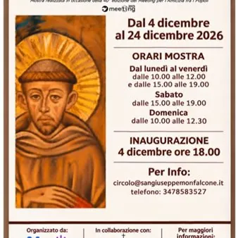

da ven 4 dic a gio 24 dic
“Io, frate Francesco”: alla scoperta dell’uomo oltre il Santo
“Io, frate Francesco”: alla scoperta dell’uomo oltre il Santo La mostra “Io, frate Francesco” nasce con l’obiettivo di riscoprire la figura autentica di San Francesco d’Assisi, andando oltre le immagini e gli stereotipi che nel corso dei secoli hanno accompagnato la sua storia.…
 Indicazioni
Indicazioni
- Costi e prenotazioni
- Costo non indicato · Prenotazione non indicata
- Programma
- Programma da verificare. Apri la fonte ufficiale per orari e possibili aggiornamenti.
- In caso di maltempo
- Nessuna indicazione specifica pubblicata.
- Note
- Acquisito automaticamente dalla fonte.
L’EVENTO
Descrizione completa
“Io, frate Francesco”: alla scoperta dell’uomo oltre il Santo La mostra “Io, frate Francesco” nasce con l’obiettivo di riscoprire la figura autentica di San Francesco d’Assisi, andando oltre le immagini e gli stereotipi che nel corso dei secoli hanno accompagnato la sua storia. Francesco viene spesso ricordato come il Santo che parlava agli uccelli, dialogava con il lupo e amava profondamente la natura. Sono tutti aspetti veri della sua vita, ma che rischiano di ridurre la ricchezza e la complessità della sua esperienza umana e spirituale. Per conoscere davvero Francesco, la mostra sceglie di lasciare che sia lui stesso a raccontarsi attraverso le proprie parole, mettendo al centro del percorso il suo Testamento, scritto nel settembre del 1226, poche settimane prima della morte, avvenuta nell’ottobre dello stesso anno. Questo documento rappresenta una delle testimonianze più profonde e personali della sua vita. Francesco lo compose dopo un lungo e difficile percorso che aveva portato alla definizione della Regola dell’Ordine francescano. Una prima versione, risalente al 1221, era stata considerata troppo severa dai frati, mentre nel 1223 venne approvata quella definitiva. Francesco, tuttavia, era convinto che per vivere autenticamente da cristiani fosse sufficiente seguire il Vangelo, senza la necessità di ulteriori norme. Se la Regola rappresentava un documento giuridico, articolato in dodici capitoli, il Testamento custodiva invece il cuore del carisma francescano. Per questo Francesco chiese che venisse sempre letto insieme alla Regola, affinché i frati potessero comprendere non soltanto le norme da osservare, ma soprattutto lo spirito e l’esperienza di vita da cui quelle norme erano nate. Attraverso il Testamento emerge un Francesco profondamente umano, con le sue inquietudini, le difficoltà, le scelte coraggiose e il desiderio di trovare un senso alla propria esistenza. Un uomo che, seguendo il Vangelo, ha intrapreso un cammino di trasformazione personale, arrivando alla gioia, alla libertà interiore e alla riconciliazione. Il percorso espositivo invita quindi a incontrare Francesco nella sua interezza, riscoprendo il rapporto con Dio, con sé stesso, con gli altri uomini e con il Creato. La sua esperienza mette in evidenza l’unità della persona, fatta di spirito, anima e corpo, e mostra come la fede non sia qualcosa di separato dalla vita quotidiana, ma una scelta capace di trasformare profondamente il modo di vivere e di relazionarsi con il mondo. Il Testamento, rivolto sia ai frati che avevano conosciuto personalmente Francesco sia a quelli delle generazioni future, continua ancora oggi a rappresentare, insieme alla Regola, un documento fondamentale per l’Ordine francescano e un punto di riferimento per comprenderne l’identità e la missione. La mostra desidera inoltre mettere in dialogo l’esperienza di Francesco con il mondo contemporaneo, mostrando quanto il suo messaggio sia ancora attuale. Le sue domande, le sue inquietudini e il suo desiderio di autenticità appartengono infatti anche all’uomo di oggi, chiamato a confrontarsi con il significato della propria esistenza, con le relazioni e con la ricerca della felicità. Ad accompagnare il visitatore in questo viaggio sono le opere di frate Sidival Fila, frate minore francescano e artista contemporaneo. La sua ricerca artistica si sviluppa attraverso il recupero di materiali abbandonati o non più utilizzati, soprattutto tessuti come lino, cotone, seta, canapa e broccati. Materiali che, attraverso il lavoro artistico, acquistano una nuova forma e un nuovo significato, richiamando simbolicamente il percorso di trasformazione e rinascita vissuto dallo stesso Francesco. Una parte conclusiva dell’esposizione è dedicata a Santa Chiara d’Assisi, figura fondamentale nella storia francescana. Chiara ha saputo custodire e testimoniare il messaggio di Francesco, non soltanto attraverso le parole, ma soprattutto mediante una vita profondamente fedele al Vangelo e agli ideali di povertà, fraternità e semplicità. “Io, frate Francesco” non vuole quindi essere soltanto una mostra dedicata a un Santo del passato, ma un’occasione per incontrare un uomo che, ottocento anni fa, ha avuto il coraggio di mettere in discussione la propria vita e di cambiarla radicalmente. Un Francesco da conoscere nuovamente, non come figura lontana e irraggiungibile, ma come uomo autentico, capace di parlare ancora oggi al cuore e alle domande di ciascuno. La mostra è curata dai Frati Minori della Porziuncola di Assisi, con il contributo di un comitato scientifico composto da studiosi della storia francescana e rappresentanti della famiglia religiosa francescana e clariana: Stefano Brufani, frate Luca Di Pasquale, frate Giuseppe Gioia, frate Gianpaolo Masotti, Grado Giovanni Merlo, suor Cristiana Mondonico, frate Francesco Piloni e frate Alfio Vespoli. L’iniziativa gode del patrocinio del Comitato Nazionale per le celebrazioni dell’Ottavo Centenario.
La mostra sarà visitabile dal 04 al 24 dicembre le mattine dal lunedì al venerdì dalle 10.00 alle 12.00, i pomeriggi dal lunedì al sabato dalle 15.00 alle 19.00 e la Domenica dalle 10.00 alle 12.30. Per info e prenotazioni scrivere a circolo@sangiuseppemonfalcone.it o chiamare il numero 3478583527.
IL PROGRAMMA
Programma e orari
Appuntamenti raccolti dalle fonti elencate. Dove manca un orario, non è ancora disponibile in questa scheda.
Programma pubblicato
- Dal 2026-12-04 al 2026-12-24
INFORMAZIONI UTILI
Prima di partire
- Controllare la fonte prima di partire.
ORGANIZZAZIONE